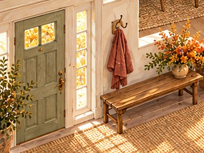
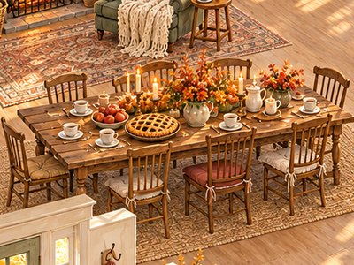
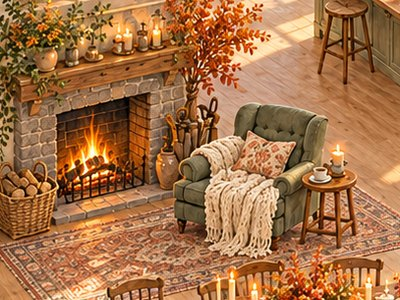
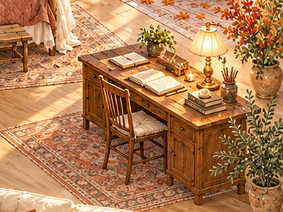
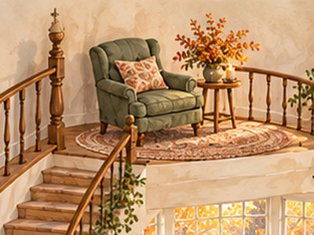
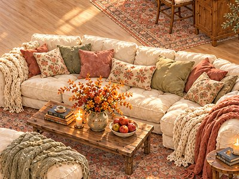

Анна Саба, врач, психотерапевт
Где ваша утечка сил – и как оставлять силы себе
Найдите номер места, которое выбрали в карусели: там ваша утечка сил и 3 действия на выбор по 10 минут, чтобы через неделю к вечеру сил на себя оставалось больше.
Как читать
Место выбирают сразу, не раздумывая. Часто оно показывает, куда уходят силы, которых к вечеру не хватает.
Выберите из трёх действий одно и делайте его 7 дней подряд, по 10 минут.
Неделя на одну утечку
- 1Найдите своё место
по номеру из карусели - 2Выберите одно действие из трёх
то, что проще начать - 310 минут в день, 7 дней подряд
и заметьте, сколько сил остаётся к вечеру
Ваше место
1Скамья у двери: жизнь наготове

Куда уходят силы. На ожидание плохого. Вы всё время готовы к тому, что что-то случится, и тело не выключается даже дома.
3 действия по 10 минут. Выберите одно: 10 минут дышите медленно, считая выдохи до десяти и начиная заново. Или запишите, чего вы ждёте, и рядом – что сделаете, если это случится. Или погуляйте 10 минут без телефона.
Что это даст. Тело получит 10 минут, когда не надо быть наготове, и к вечеру напряжения станет меньше.
2Накрытый стол: старание для всех

Куда уходят силы. На то, чтобы всем было хорошо. Вы замечаете, чего хотят другие, раньше, чем своё.
3 действия по 10 минут. Выберите одно: съешьте что-то вкусное одна и не спеша. Или один раз в день спросите себя: «А я чего хочу?» – и сделайте то из этого, что умещается в 10 минут. Или откажитесь от одного дела, которое делаете только ради чужого удобства.
Что это даст. У вас появится время для себя, а не для чужих ожиданий.
3Кресло у камина: забота обо всех, кроме себя

Куда уходят силы. На заботу о других. До себя очередь не доходит: еда на бегу, сон – сколько останется.
3 действия по 10 минут. Выберите одно: сделайте себе чай и выпейте его сидя. Или лягте на 10 минут под плед без телефона. Или сделайте для себя то, что обычно делаете для близких: приготовьте любимое блюдо.
Что это даст. Вы почувствуете, как это – когда о вас заботятся, пусть пока и вы сами, и к вечеру у вас останется немного сил на себя.
4Подоконник с книгой: чужие голоса
Куда уходят силы. На чужое: новости, чаты, просьбы, советы. Внутри нет тишины, чтобы услышать себя.
3 действия по 10 минут. Выберите одно: первые 10 минут утра – без телефона. Или выключите звук в двух самых шумных чатах. Или 10 минут почитайте то, что нравится именно вам.
Что это даст. В голове станет тише, и решать, на что тратить силы, будете вы, а не чаты.
5Кухня: мысли по кругу
Куда уходят силы. На мысли, которые крутятся и не решаются. Голова работает без выходных.
3 действия по 10 минут. Выберите одно: займите руки простым делом: тесто, цветы, уборка одной полки. Или выпишите крутящуюся мысль на бумагу целиком. Или 10 минут пройдитесь быстрым шагом.
Что это даст. Мысли отпустят хотя бы на время, и к вечеру останутся силы, которые раньше съедали мысли.
6Письменный стол: незакрытые дела

Куда уходят силы. На то, чтобы помнить всё начатое. Незакрытые дела тянут силы, даже когда вы их не делаете.
3 действия по 10 минут. Выберите одно: выпишите все незакрытые дела на один лист. Или закройте одно маленькое дело, которое висит дольше всего. Или честно вычеркните одно дело, которое вы уже не будете делать.
Что это даст. Голове станет легче: одним висящим делом меньше или все дела – на бумаге, а не в памяти.
7Качели: всё всерьёз
Куда уходят силы. На «надо». На радость без пользы в вашем дне не остаётся места.
3 действия по 10 минут. Выберите одно: потанцуйте под одну любимую песню. Или сделайте что-то без результата: раскраска, пазл, пройтись босиком по траве. Или вспомните, что радовало вас в детстве, и сделайте это 10 минут.
Что это даст. В дне появится то, что заряжает, а не только то, что надо.
8Ванна со свечами: тело на износ
Куда уходят силы. На работу без передышки. Тело тратит больше, чем вы успеваете восполнить.
3 действия по 10 минут. Выберите одно: примите тёплый душ или ванну для ног без спешки. Или лягте на 10 минут раньше. Или сделайте мягкую растяжку перед сном.
Что это даст. Тело начнёт восстанавливаться понемногу каждый день, а не только в отпуске.
9Телескоп: цель в тумане
Куда уходят силы. На бег по кругу. Когда непонятно, куда вы идёте, любое дело кажется тяжелее.
3 действия по 10 минут. Выберите одно: напишите, какой вы хотите видеть свою жизнь через год. Или выберите одно желание и запишите первый шаг к нему. Или вспомните, о чём мечтали в 20 лет, и запишите, что из этого хочется до сих пор.
Что это даст. У будней появится направление, и сил на них станет уходить меньше.
10Кресло над лестницей: чужие проблемы

Куда уходят силы. На то, чтобы спасать всех рядом. Чужие беды вы несёте как свои.
3 действия по 10 минут. Выберите одно: на одну просьбу ответьте «мне нужно подумать». Или запишите, чьи проблемы вы решаете, и отметьте, что из этого правда ваше. Или 10 минут побудьте одна после тяжёлого разговора.
Что это даст. Вы оставите себе силы на свою жизнь, а другим – их ответственность.
11Диван с подушками: всё в одиночку

Куда уходят силы. На то, чтобы тащить всё самой. Попросить о помощи кажется труднее, чем сделать.
3 действия по 10 минут. Выберите одно: попросите близкого об одной мелочи. Или отдайте одно дело тому, кто может его сделать. Или напишите подруге: «Мне сейчас тяжело, поговорим?»
Что это даст. Вы проверите, каково это – не нести всё одной, и разрешите себе просить.
12Кровать под балдахином: отдых с чувством вины
Куда уходят силы. На вину за отдых. Даже когда вы отдыхаете, внутри звучит «а дела?».
3 действия по 10 минут. Выберите одно: поставьте в календарь 10 минут отдыха и назовите его «важная встреча». Или, отдыхая, скажите себе: «Сейчас моё время». Или лягте днём на 10 минут с будильником.
Что это даст. Отдых начнёт восстанавливать, потому что в нём станет меньше вины.
Почему силы утекают снова и снова
Часто утечка держится на привычке, которая сложилась давно: быть наготове, стараться для всех, отдыхать только заслужив.
Действия на неделю помогут закрыть утечку на время. Если силы утекают годами, дело в этой привычке, и цель – найти её и ослабить, чтобы силы реже утекали снова, – так мы работаем на интенсиве.
Мини-тест помогает прислушаться к себе и не заменяет консультацию специалиста. Если сил нет давно и ничего не хочется, обратитесь к врачу или психотерапевту.
Ближайший поток · онлайн
Интенсив «Система перехода в новую реальность за 24 часа»
3 эфира с домашними заданиями. Автор – Анна Саба, врач, психотерапевт, 10 лет практики, более 7000 клиентов.
Что будет
- «Свобода от прошлого». Находим и убираем то, что годами держало вас на месте.
- «Энергия и уровень счастья». Видите, куда каждый день утекают силы, и возвращаете себе энергию.
- «Как получать желаемое без откатов и саботажа». Ставите свою цель и получаете пошаговый план.
К чему приведёт
- вы видите, куда каждый день утекают силы, и учитесь их возвращать
- находите привычку, из-за которой силы уходят снова и снова, и начинаете её убирать
- уходите с пошаговым планом и первыми действиями к своей цели
Для кого
- к вечеру сил на себя не остаётся
- многое пробовали, но силы снова уходили в то же место
- отдыхаете, а сил не прибавляется
Подарки сразу после регистрации
- Демо-сессия ДПДГ, 40 минут – попробуете метод на себе.
- Расстановочная практика «Почему у меня до сих пор нет того, чего я хочу», 20 минут – показывает скрытые причины, из-за которых желаемое не приходит.
- Тест «Где мой затык» с расшифровкой – покажет, какая установка держит вас на месте.
- Чат «Автомагически» – ежедневная практика внимания в кругу единомышленников.
Обычная цена 4 990 ₽. По промокоду СИЛЫ участие 0 ₽.
Записаться по промокоду СИЛЫФорма откроется здесь же, подарки придут сразу после регистрации.